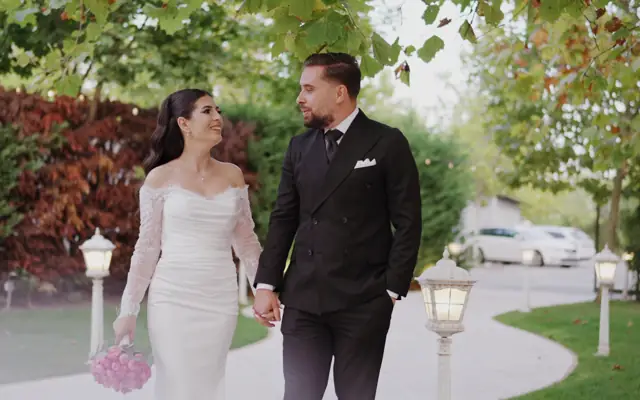
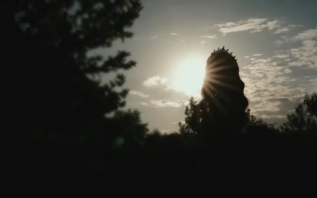
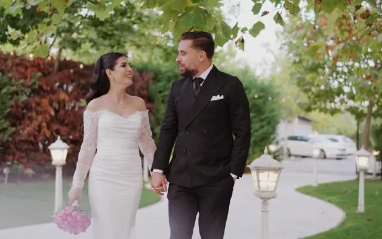
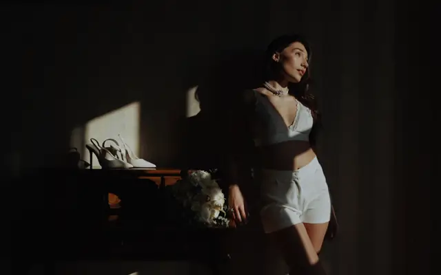

Alexandra & Adi
Nuntă

Riviera - Targu-JiuPlay
Am filmat la

Filmez nunți, botezuri și majorate. Tu bucură-te de ziua ta, eu știu ce am de făcut, unde trebuie să fiu și când.






Nuntă
Nuntă

Cununie

Nuntă

Majorat

Botez

Mirii mulțumiți, după 150+ evenimente filmate
Prețuri transparente, fără costuri ascunse. Toate pachetele includ consultanță înainte de eveniment.

Abordarea mea este una discretă. Prefer să fiu invizibil în ziua cea mare, capturând momentele naturale, fără să întrerup cursul firesc al evenimentului.
Sperând că nu ai ajuns aici întâmplător, vreau să te salut cu această ocazie și să mă prezint.
Mă numesc Andrei Vlădulescu am peste 3 ani de experiență în domeniul videografiei. Mă gândesc că, în ultima perioadă, v-ați confruntat cu întrebarea aceasta: pe cine să alegem ca videograf sau fotograf?
Vreau să vă ușurez această mică provocare, arătându-vă ce fac și cum lucrez. Portofoliul meu este cartea mea de vizită, așa cum va fi și viitorul vostru clip de nuntă, de aceea pot garanta că veți fi mulțumiți de alegerea făcută.
Dar, înainte de toate, vreau să fim prieteni. Poți să-mi ceri sfaturi, iar eu voi fi acolo să ajut cu tot ce pot, pentru că știu cât de important este evenimentul pentru voi.
O să-ți fiu alături în ziua evenimentului! O să ai multe pe cap, nu trebuie să ne porți și nouă de grijă. Știu ce am de făcut, știu unde trebuie să fiu și când să fiu. Tu bucură-te de ziua ta! Cu cât vei fi mai relaxat(ă), cu atât rezultatele vor fi mai bune.
Camere 4K, stabilizatoare profesionale, drone pentru cadre aeriene.
Discreție totală, emoție autentică.
Procesul meu este gândit pentru ca tu să te bucuri de ziua nunții, fără griji.
Ne întâlnim pentru a ne cunoaște și pentru a discuta viziunea voastră. Vreau să înțeleg povestea voastră de dragoste.
Stabilim împreună timeline-ul zilei și locațiile importante. Pregătesc echipamentul și planul de filmare.
Ziua cea mare! Sunt prezent discret, capturând fiecare moment important, fără să întrerup fluxul natural.
Selectez cele mai bune cadre, adaug muzică și efecte pentru a crea un film care să vă emoționeze de fiecare dată.
Răspunsuri la cele mai comune întrebări. Dacă ai altele, nu ezita să mă contactezi.
Toate întrebărileSunt prezent de la pregătiri până la finalul petrecerii, de obicei între 10-14 ore. Sunt flexibil în funcție de programul evenimentului.
Timpul de editare variază între 4-6 săptămâni în funcție de sezon și complexitatea proiectului. În perioada de vârf (iunie-septembrie) poate dura puțin mai mult.
Toate pachetele includ filmarea, editarea profesională, color grading, și livrarea filmului final în format digital , sunet profesional din stație etc.
Se achită un avans de 20% la semnarea contractului pentru a bloca data, iar restul de 80% la terminarea evenimentului. Accept transfer bancar sau Revolut.
Da, lucrez în toată România. Pentru evenimentele în afara Târgu-Jiului se adaugă costuri de transport și cazare dacă este cazul.
Am echipament profesional rezistent la apă și experiență în filmarea în diverse condiții meteorologice. Uneori, ploaia poate adăuga un farmec la filmul vostru de nuntă. În cazuri extreme meteorologice vom face sedinta foto/video după ziua evenimentului.
Da, folosesc exclusiv muzică licențiată sau din biblioteci de muzică fără drepturi de autor pentru a evita problemele cu copyright-ul pe platformele de social media.
Da, pot face modificari în cazul în care ve fi nevoie.
Scrie-mi data și locația, îți răspund cât pot de repede.
Solicită ofertăData e încă liberă?Hai să vorbim despre ziua voastră